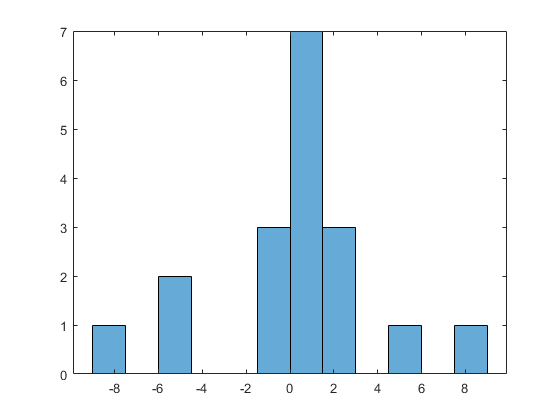
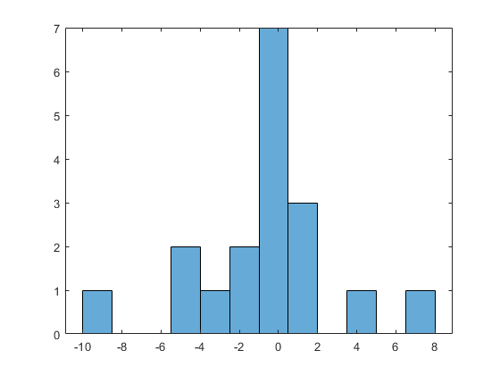
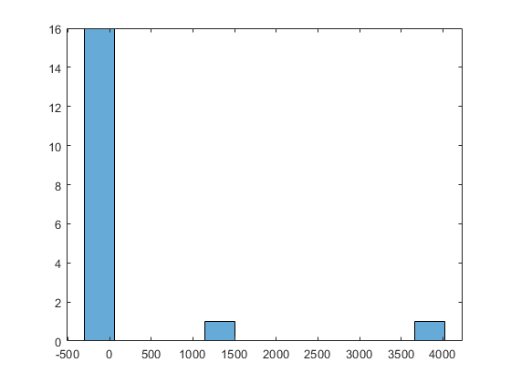
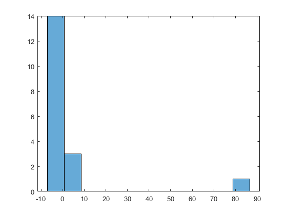
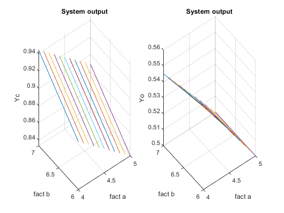

Провести стратегическое и тактическое планирование модельного эксперимента.
Выходной реакцией системы является случайная величина, распределенная по закону распределения Коши. Факторами являются параметры: b ϵ (6, 7); a ϵ (4, 5). Оценить показатель эффективности вероятность исхода реакции системы < 5. Доверительный интервал d = 0.3 с уровнем значимости ɑ = 0.01.
Contents
1. Задание исходных данных
% очистка рабочего пространства clear all; % задание количества факторов nf = 2; % минимальные значения диапазонов minf = [4 6]; % максимальные значения диапазонов maxf = [5 7];
2. Формирование дробного двухуровневого плана эксперимента для учета взаимодействий
% количество экспериментов N = 2 ^ nf; % генерация плана эксперимента fracfact('a b ab'); % сохранение плана эксперимента fracplan = ans % фиктивный фактор fictfact = ones(N, 1); % добавление фиктивного фактора в план X = [fictfact ans]' % массив для хранения матрицы значений fraceks = zeros(N, nf); % цикл по факторам for i = 1 : nf % цикл по совокупности экспериментов стратегического плана for j = 1 : N % генерация матрицы значений плана fraceks(j, i) = minf(i) + (fracplan(j, i) + 1) * (maxf(i) - minf(i)) / 2; end end % вывод матрицы значений fraceks
fracplan =
-1 -1 1
-1 1 -1
1 -1 -1
1 1 1
X =
1 1 1 1
-1 -1 1 1
-1 1 -1 1
1 -1 -1 1
fraceks =
4 6
4 7
5 6
5 7
3. Тактическое планирование эксперимента
% задание доверительного интервала d_sigma = 0.3; % задание уровня значимости alpha = 0.01; % определение t-критического tkr_alpha = norminv(1 - alpha / 2); % определение требуемого числа испытаний NE = round(tkr_alpha ^ 2 / (4 * d_sigma ^ 2)) % цикл по совокупности экспериментов стратегического плана for j = 1 : N % значение фактора a в эксперименте j a = fraceks(j, 1); % значение фактора b в эксперименте j b = fraceks(j, 2); % цикл статистических испытаний for k = 1 : NE % имитация функционирования системы u(k) = systemeqv(a, b); end % оценка параметров (реакции) по выборке наблюдений % среднее значение mx = mean(u); % дисперсия DX = std(u) ^ 2; % расчёт вероятности, что значение исхода реакции системы < 5 % счётчик значений < 5 s = 0; % цикл по исходам for k = 1 : NE % отбираем подходящие под условие исходы if u(k) < 5 % увеличиваем счётчик s = s + 1; end end % находим вероятность, что значение исхода реакции системы < 5 Y(j) = s / NE; % формирование и отображение гистограммы с 12-ю интервалами figure; histogram(u, 12); end % расчёт вспомогательной матрицы C = X * X'; % коэффициенты регрессии b_ = inv(C) * X * Y'
NE =
18
b_ =
0.8889
-0.0278
0.0278
-0.0000
    4. Формирование зависимости реакции системы на множестве реальных значений факторов
% значения фактора A с шагом 0.1 A = minf(1) : 0.1 : maxf(1); % значения фактора B с шагом 0.1 B = minf(2) : 0.1 : maxf(2); % количество значений фактора A [k, N1] = size(A); % количество значений фактора B [k, N2] = size(B); % цикл по значениям фактора A for i = 1 : N1 % цикл по значениям фактора B for j = 1 : N2 % значения фактора A в масштабе от -1 до 1 an(i) = 2 * (A(i) - minf(1)) / (maxf(1) - minf(1)) - 1; % значения фактора B в масштабе от -1 до 1 bn(j) = 2 * (B(j) - minf(2)) / (maxf(2) - minf(2)) - 1; % экспериментальная поверхность реакции Yc(j, i) = b_(1) + an(i) * b_(2) + bn(j) * b_(3) + an(i) * bn(j) * b_(4); % теоретическая поверхность реакции Yo(j, i) = 1 / pi * atan((5 - A(i)) / B(j)) + 0.5; end end
5. Отображение зависимостей в трехмерной графике
[x, y] = meshgrid(A, B); figure; subplot(1, 2, 1), plot3(x, y, Yc), xlabel('fact a'), ylabel('fact b'), zlabel('Yc'), title('System output'), grid on, subplot(1, 2, 2), plot3(x, y, Yo), xlabel('fact a'), ylabel('fact b'), zlabel('Yo'), title('System output'), grid on;